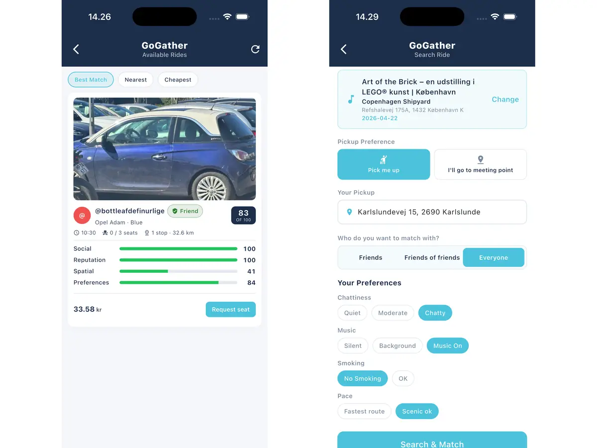

Founder of Gathr Solutions — the platform Danish security companies run their operations on, live on the App Store and Google Play. I take products from first commit to production, and keep them running.
I build software that other people's businesses actually run on. Two of them are live right now.
0
App store releases, iOS and Android, built solo
0 / 12
BSc weighted GPA, Aalborg University
0 (A)
Bachelor project, top grade on the Danish scale
Flagship · gathrsolutions.dk
Gathr Solutions
The problem
Danish security firms run on a pile of separate tools. Spreadsheets for shifts, paper for patrol logs, phone calls when something goes wrong.
Planning
Gathr replaces the pile. Drag and drop shift planning on top of an employee database that knows certifications and availability.
On the ground
Patrols are verified at NFC, QR, BLE and GPS checkpoints, with incident alerts the moment something happens — plus time tracking, reporting and a customer portal.
Operations
I designed it, built it and run it: data model, APIs, web, mobile with offline support, auth, CI/CD, hosting. Live on the App Store and Google Play.
Online ordering platform, developer and IT operations · ongoing
The online ordering platform I built for a restaurant in Greve. Customers browse the menu, order and pay online for pickup, and the kitchen receives orders in real time. I also run the restaurant's IT day to day: the site, payments, hosting, and the digital signage driving the screens in the restaurant itself.
A second real business running on software I built and keep alive.
Backend and DevOps · open source education platform
Built the CI/CD pipelines in GitHub Actions covering tests, linting and build checks, set up delivery through Docker images with automated deployment, and worked in short lived branches with peer review. Also my fifth semester project, graded 10, a B.
Node.js · MongoDB · React · Docker · CI/CD
Privacy preserving ride sharing
2026
Bachelor project · 15 ECTS · graded 12, an A
Socially aware bipartite matching with non interference privacy for event based ride sharing. A matching algorithm that pairs riders without leaking who they are or where they are going.

Algorithms · Privacy · Research
A language for smart lighting
2025
Language design, parser and interpreter
Designed the grammar for a scripting language that controls Philips Hue lighting, then built a working interpreter for it from scratch in Java. Paired with a REST API on Azure in C#/.NET 8.
Java · Compilers · C#/.NET 8 · Azure
Digital signage
In production
Built for Chicken N Chicken Waves
Drives the menu and campaign screens in the restaurant: what shows on which display, updated remotely instead of by USB stick and a ladder. Running in the restaurant every day.
Displays · Remote management · Web
Mobile applications
2023 – 2026
Flutter and native Swift
Focuz, an AI assisted calorie tracker, and a shopping list app. Local persistence, state management and cross platform builds for iOS and Android, plus native Swift where it mattered.
Flutter · Dart · Swift · iOS · Android
Earlier work
2023 – 2024
University and personal projects
An ordering and invoicing system for Sylles Isfabrik in Java, a personal budget and expense tracker built with JavaScript and MongoDB, and a travel planner written in C. All three were group projects graded 10, a B.
Java · JavaScript · MongoDB · C
Experience
Where I have worked
2025 — now
Founder and Software Engineer
Gathr Solutions
Built and operate a workforce management platform for security companies, live on iOS, Android and web. Sole engineer across product, code and operations.
Ongoing
Developer and IT Operations
Chicken N Chicken Waves · chickenwaves.dk
Developed the restaurant's online ordering platform and run their IT operations: the ordering site, payments, hosting and the day to day systems the business depends on.
Feb — Jul 2026
Teaching Assistant, Internet and Web Programming
Aalborg University Copenhagen
Ran weekly lab sessions for second semester students, reviewed code, and debugged development environments across Windows and macOS. Wrote troubleshooting material used by the whole cohort.
2022 — 2024
Mentor and Tutor
Mentor Danmark
One to one tutoring in mathematics, programming and natural sciences, adapting the explanation to each student.
2019 — 2022
Graphic Designer and Web Developer
Raise Agency ApS
Built and maintained responsive web pages and visual assets for client campaigns using HTML, CSS, JavaScript and Photoshop.
Toolkit
What I work with
Languages
Java
C#/.NET 8
JavaScript
C
Dart
Swift
SQL
Python
Bash
Mobile
Flutter
Swift
iOS
Android
Offline first
State management
Web and backend
React
Node.js
Express
REST APIs
MongoDB
SQL databases
Cloud and DevOps
Microsoft Azure
GCP
Docker
Git
GitHub Actions
CI/CD
Linux
Engineering
System design
Object oriented design
Compilers
Agile teamwork
UI/UX
Support and ops
Windows
macOS
Linux
Troubleshooting
TCP/IP
DNS
VPN
Education
Aalborg University Copenhagen
2026 — 2028
MSc in Software Engineering
Technical Faculty of IT and Design. Starting September 2026.
2023 — 2026
BSc in Engineering (Software), 180 ECTS
Awarded 6 July 2026. Bachelor project graded 12, an A on the ECTS scale.
GPA 8.8 / 12
2019 — 2022
Sydkysten Gymnasium
Upper secondary education.
GPA 9.4 / 12
Contact
Let us talk
Full stack, mobile, backend, CI/CD — if it ships to real users, it interests me. Copenhagen or remote. The fastest way to reach me is email.